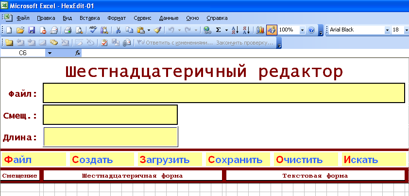
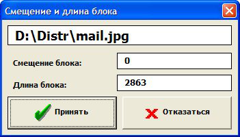
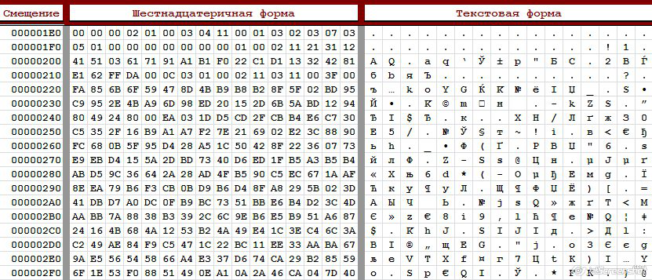
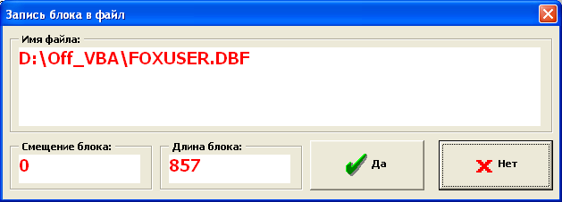
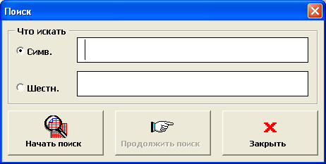
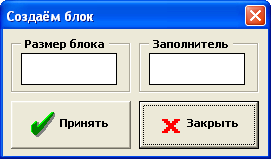

Вашему вниманию предлагается шестнадцатеричный редактор HexEdit.
Для чего нужен шестнадцатеричный редактор?
Для просмотра и корректировки любой информации, содержащейся в файлах.
Кому это может быть нужно и при каких обстоятельствах?
Например, тому, кто хочет заглянуть внутрь файла (любой структуры) и что-либо найти (и поправить). НехEdit будет особенно полезен в тех случаях, когда политика безопасности не разрешает использовать exe-файлы, но разрешает использовать Excel.
Пользоваться программой несложно. Открываете прикреплённый к статье файл (разрешив использование макросов) - и увидите следующую картинку:

Органы управления программой собраны в линейку (Файл, Создать, Загрузить, Сохранить, Очистить, Искать).
Работу можно начинать с просмотра / редактирования существующего файла, или с создания нового файла.
Для открытия существующего файла, нужно щелкнуть по надписи “Файл”. Пользователю будет показано стандартное окно “Открыть”.
Следует выбрать файл и нажать кнопку “Открыть”. Имя файла будет занесено в желтое поле, а пользователю будет предложено подтвердить загрузку:

В форме, озаглавленной “Смещение и длина блока”, по умолчанию указывается нулевое смещение (загрузка с начала). Для файлов, короче 40Кб длина загружаемой части по умолчанию равна длине файла. Для файлов больших размеров длина устанавливается в 40 Кб (это ограничение связано с размером листа рабочей книги).
Нажимаем кнопку “Принять” – файл загружается на лист:

Пользователь может корректировать загруженный блок - как по символьному, так и по шестнадцатеричному изображению. Откорректированный блок может быть записан обратно в файл. Для этого нужно щелкнуть по надписи “Сохранить”.
Пользователю будет предложено подтвердить сохранение блока:

Программа позволяет искать в пределах блока (как символьных, так и шестнадцатеричных строк).
Для начала поиска следует щелкнуть по надписи “Искать” – отобразится форма поиска:

Следует с помощью радиокнопок выбрать режим поиска (символьный или шестнадцатеричный), ввести строку поиска и нажать кнопку “Начать поиск”. Если заданная строка будет найдена, курсор символьного или шестнадцатеричного изображения будет установлен в начало строки:

Далее можно продолжать поиск (нажимая на соответствующую кнопку). Если строка не найдена, пользователю выдается сообщение.
Для очистки области и сброса остальных параметров служит надпись “Очистить”.
При щелчке по этой надписи происходит очистка всех полей редактора.
HexEdit можно применять и для создания новых двоичных файлов.
Для этого необходимо щелкнуть по надписи “Создать”.
Прежнее содержимое рабочих полей редактора будет стерто, а пользователю будет предложено создать блок двоичных данных:

Следует задать размер блока (в десятичном виде) и символ-заполнитель (в шестнадцатеричном виде), а затем нажать кнопку “Принять”. В редакторе будет создан двоичный блок.
Этот блок можно редактировать, а результат редактирования можно сохранить в файле. Для сохранения нужно щелкнуть по надписи “Сохранить”.
С разработчиком программы HexEdit можно связаться, отправив ему письмо на адрес catstail@narod.ru
© Файфель Борис Леонидович
|
Вложение |
Размер |
Загрузки |
Последняя загрузка |
|
165.53 КБ |
0 |
Ещё не загружался |
- 6717 просмотров